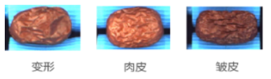

产品简介
AIDI介绍
AIDI（Artificial Intelligent Defect Inspection）是阿丘科技面向工业视觉场景打造的平台软件，用于解决复杂缺陷的定位、检测、分类及字符识别等问题，具有强大的检出能力。内置多种应用模块，无需编程，帮助用户快速构建和迭代模型。能够满足不同应用场景的差异化需求，助力品质管控和良率提升。
○ 支持多样化应用场景
○ 满足项目核心指标要求
○ 易于集成
○ 零代码构建模型
系统要求
运行版系统要求
开发版系统要求
AIDI各算法模块场景介绍
AI算法模块
分割模块 精确到像素级的特征检测工具，用于在图像中对复杂缺陷进行分割。可用于输出检测结果的图形属性（ex.面积、长边、短边等）
应用场景：像素级ROI设定；不规则形状目标检测；小目标检测
非监督分割模块 需要一定数量的OK样本，通过学习识别出图像中和OK样本不同的地方，并输出像素级缺陷检出区域
应用场景：NG样本不易得，而OK样本易得

检测模块 定位且对目标进行分类，可以检测多种类型的缺陷
应用场景：成块特征检测；边缘模糊缺陷的检测；散点状缺陷的检测
定位模块 定位图像中的单个或多个目标的位置。
应用场景：常用于在目标多样、姿态多样等复杂场景中快速查找目标。
装配检查模块 检查产品的装配目标的个数、位置是否符合要求
应用场景：部件完整度检查

分类模块 用于在图像中对不同的缺陷进行分类，也可以对图片整体进行分级
应用场景：缺陷分类、产品分等级

非监督分类模块 通过学习OK样本，来找到缺陷图，仅做图像级判定，NG或者OK
应用场景：产品存在未知缺陷（例如错料）；产品有无的判断（例如字符整体缺失、缺料）

工具
输入节点 工具介绍：工程的图像存储工具
使用场景：工程创建后，默认生成。用户根据需要将来自同一个工位的图像添加到本节点中，然后串接或者并联其他模块进行检测流程
综合判定节点 工具介绍：以原图为单位判定最终结果
使用场景：一个检测面需要多条分支的检测任务，然后需要最终设定判定条件，来定义什么才是最终NG标准或者OK标准又或者其他自定义标准
区域计算工具 工具介绍：高级工具，用来整合多个模块的结果信息，按照指定规则计算后给到其他算法工具
使用场景： 整合后结果会给到综合判定工具的场景：
○ 需要对整合结果可视化：通过区域计算工具
○ 不需要对整合结果可视化：通过综合判定工具
关键产品流程
软件安装说明
安装步骤
步骤 1 在下载目录中解压缩 AIDI-3.2.0-stable，并双击打开 AIDI_release_3.2.0_stable_20230927.exe。 得到如下界面并点击下一步。
步骤 2 进入许可证协议页并点击[我接受]以进行下一步安装。
步骤 3 选择合适的安装路径即可进行安装。
步骤 4 待安装进度完成后，即完成 AIDI 安装。
AIDI许可说明：
AIDI为收费软件，无法直接打开。需使用硬件加密狗或软加密授权码激活方可使用。 不同型号加密狗或授权码，支持的功能有所差别。
硬件加密狗（硬许可）： 区分：AIDI训练版软件、AIDI运行版软件 如用户当前未获取软件许可（加密狗），请向对应的支持和对接人员（销售或技术工程师）申请获取。 使用方法：
（1）将硬件加密狗插在所要使用的设备上
（2）打开对应权限的AIDI，即可使用训练以及推理功能
注意事项：使用过程中请不要拔掉加密狗 到期提醒：7天
授权码： 仅为试用提供，详细咨询：联系我们-阿丘科技 (aqrose.com) 使用方法： （1）打开软件，在提示弹窗中输入授权码，点击激活
初始化
● 默认工作区选择：此步骤目的是让用户选择一个默认存储路径作为初始工作区
● 进入加载页面

● 进入主界面